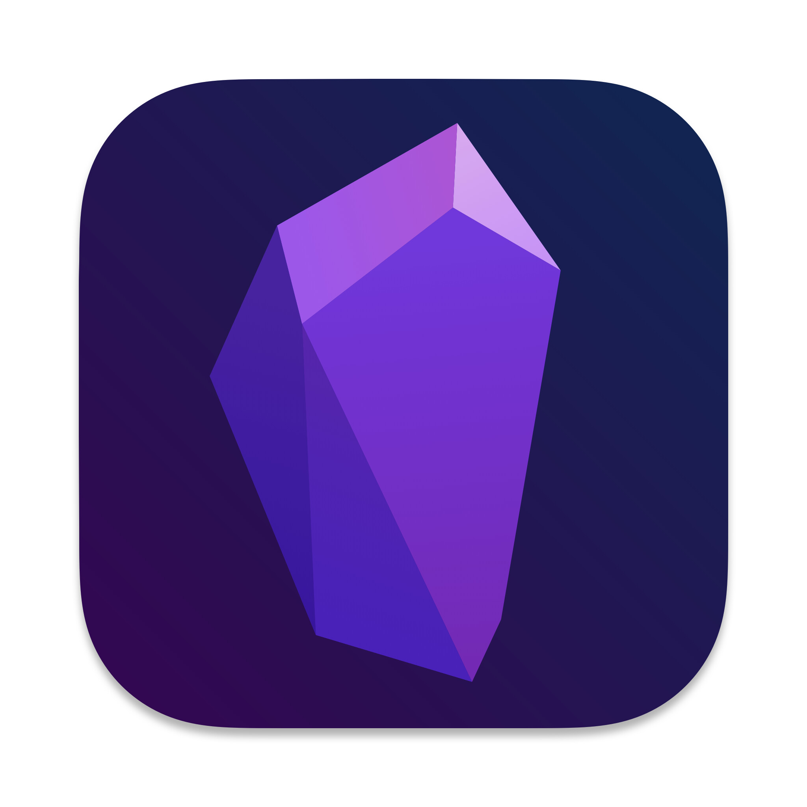
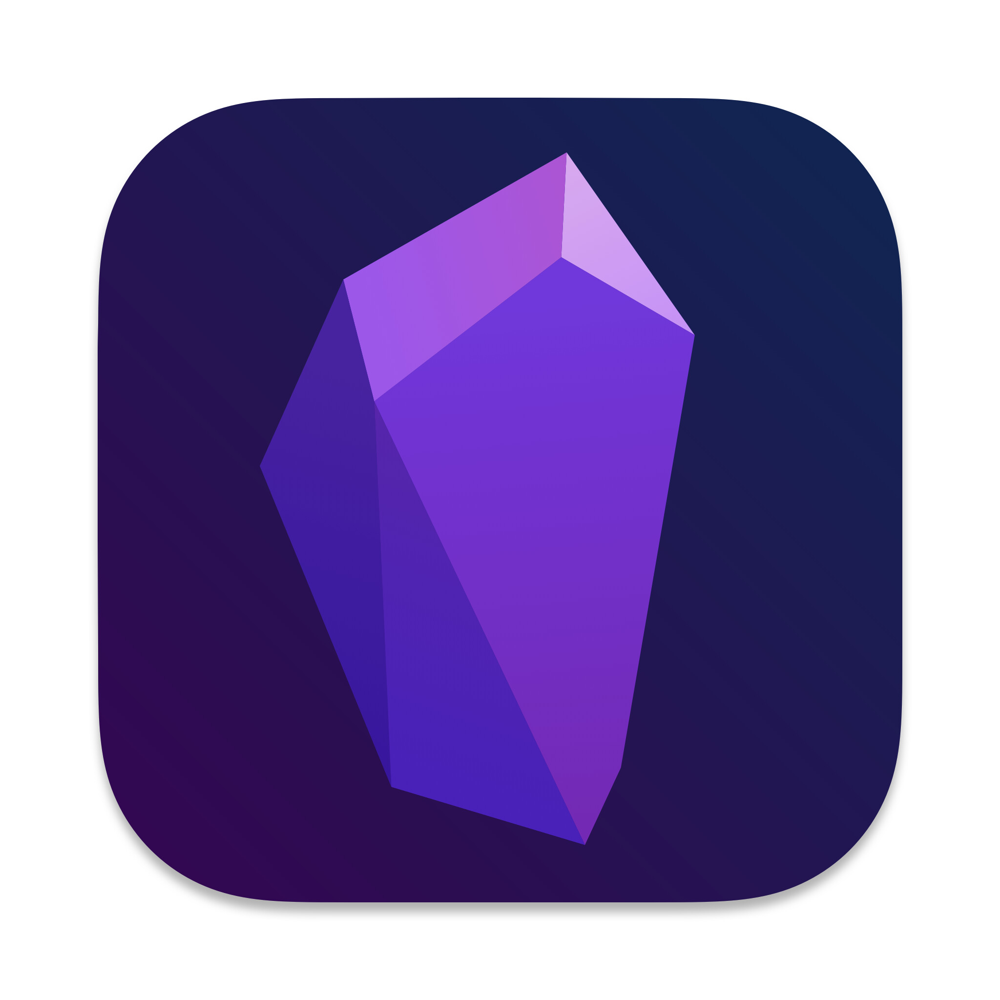

ASSISTANT ADMINISTRATOR - Tshwane School for Business & Society (TSB)
Responsible for organizing, scheduling, and managing appointments using Microsoft Teams. Collaborated with executive and senior management to address senior management's requests and inquiries, assisted in the preparation of monthly reports, meeting minutes whilst ensuring accuracy of the information. Facilitated administrative requests and addressed queries form senior management effectively. Maintained comprehensive records and documentation to enhance organizational efficiency
TECHNICAL SUPPORT /DESKTOP SUPPORT - INCREDIBLE SOLUTIONS PTY, LTD (GAME & DION WIRED)
Providing timely and effective technical support to end-users for desktop hardware, software, and peripherals. Installing, configuring, and troubleshooting desktop operating systems (e.g., Windows, macOS) and applications. Diagnosing and resolving hardware and software issues, including desktops, laptops, printers, and mobile devices. Assisting with user account setup, password resets, and access permissions to ensure security and data integrity. Conducting system upgrades and patches to maintain system stability and security. Documenting technical procedures, solutions, and configurations for knowledge sharing and future reference. Providing user training and support to enhance productivity and proficiency with technology tools. Maintaining inventory of hardware and software assets, ensuring accurate records and proper asset management. Adhering to IT policies, procedures, and best practices to ensure compliance and security standards are met.
Senior Buyer - CASH CRUSADERS CELTIS RIDE
Responsible for evaluating, testing, and conducting buying of the goods through negotiations with clients. Administration management of data capturing, filing and goods management. Responsible for daily financial management namely, ensuring that daily banking and daily cash float management. Daily training of staff on products and goods. Planning and leading daily staff meetings